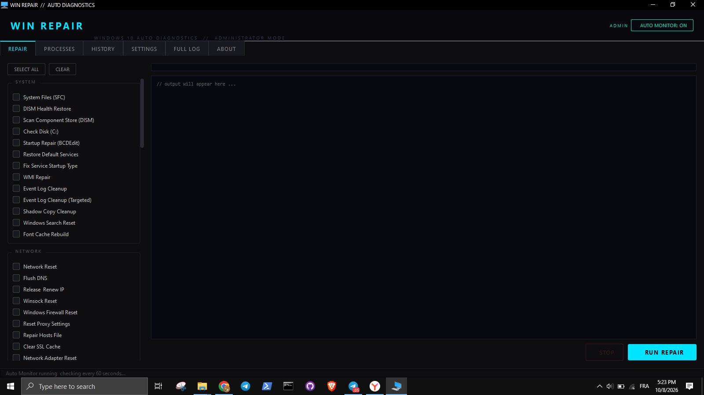

WinRepair
A Windows 10 auto repair tool. Run common diagnostics and fixes from one dashboard, with an optional background monitor that alerts you when something looks wrong.
See it in action

The WinRepair dashboard with repair tasks and Auto Monitor status. Click the image to view it full size.
Features
Repair tools
System, network, maintenance, security, drivers, performance, apps, cleanup, and advanced fixes using built-in Windows tools such as SFC, DISM, CHKDSK, and netsh.
Auto Monitor
Watches CPU, RAM, disk, network, services, and security settings in the background, and can send email alerts.
Auto-Heal
Applies fixes automatically with safeguards: cooldowns, a disable list, and a restore point before risky repairs.
Process Manager
Suspend idle apps and resume them automatically when you return to them.
History
Every detection and repair is logged, searchable, and exportable to CSV.
Before you run it
WinRepair makes system-level changes. Back up important files before running repairs. Risky repairs create a restore point first, and destructive actions are off by default.
Windows SmartScreen may warn that the app is from an unknown publisher. This is normal for independent tools. Click More info, then Run anyway only if you downloaded the file from this page.
How to install
- Download the .rar file using the button above.
- Extract it with WinRAR or 7-Zip.
- Open the
AutoHealingSystemfolder and rundist\WinRepair.exeas Administrator.
Requirements
- Windows 10 or Windows 11
- Administrator rights (most repairs require elevation)